사진 저작자 표시
지역 대표사진 8장과 라이선스 카탈로그 이미지
24장의 출처·저작자·라이선스를 기록한다.
오프라인입니다. 저작자와 라이선스는 그대로 읽힙니다. 라이선스 전문과 원본 링크만 연결이 필요합니다.
Barcelona · Girona · Nice 샘플 카탈로그
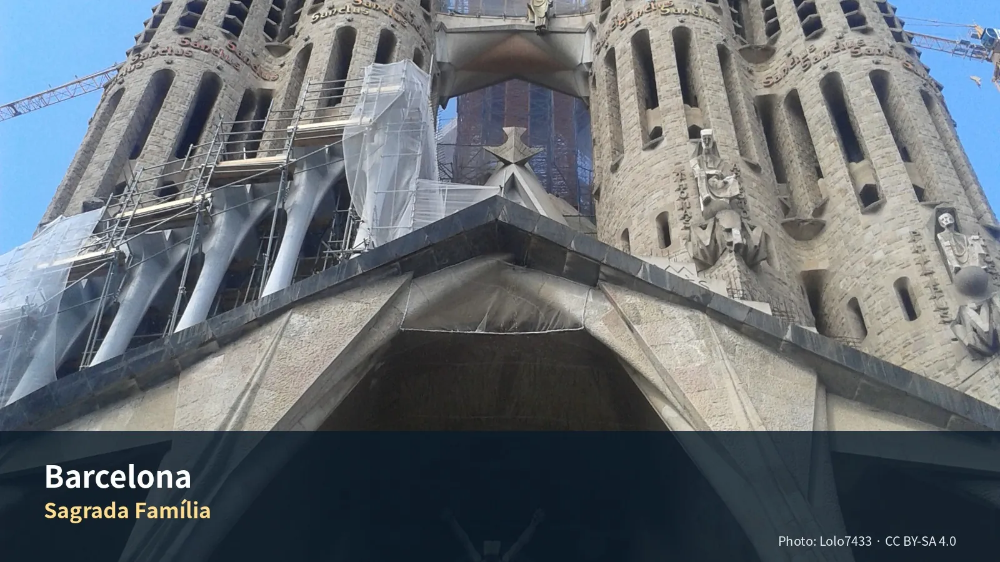
Sagrada Família
저작자 Lolo7433
출처 Wikimedia Commons
라이선스 CC BY-SA 4.0
수정 기존 검증 파생본을 리사이즈하고 WebP로 변환, 메타데이터 제거
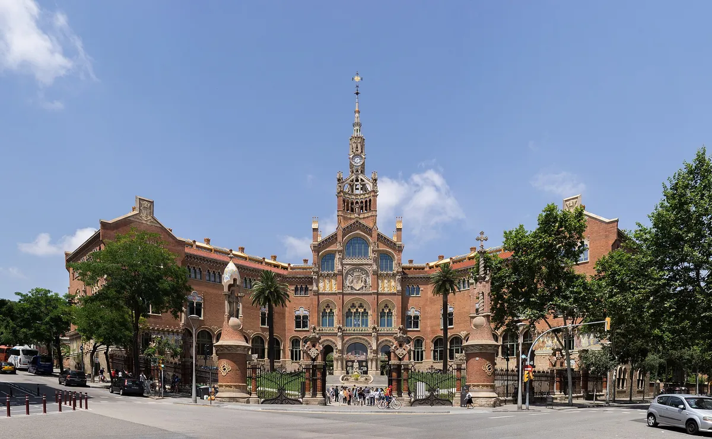
Sant Pau Recinte Modernista
저작자 Thomas Ledl
출처 Wikimedia Commons
라이선스 CC BY-SA 4.0
수정 리사이즈 및 WebP 변환, 메타데이터 제거
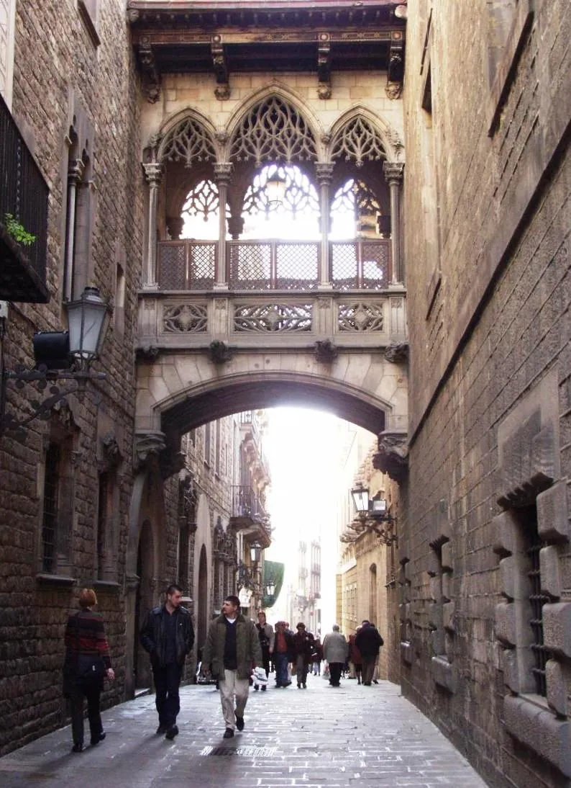
Barri Gòtic
저작자 Llull
출처 Wikimedia Commons
라이선스 CC BY-SA 2.0
수정 WebP 변환 및 메타데이터 제거, 업스케일 없음
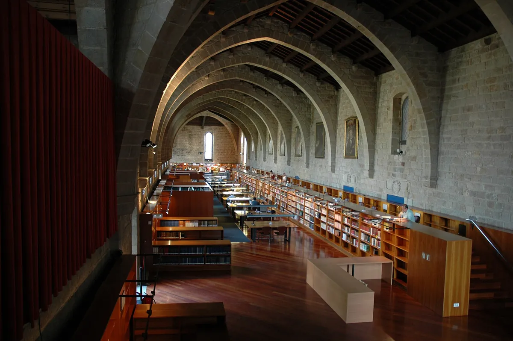
Biblioteca de Catalunya
저작자 Josep Renalias
출처 Wikimedia Commons
라이선스 CC BY-SA 3.0
수정 리사이즈 및 WebP 변환, 메타데이터 제거
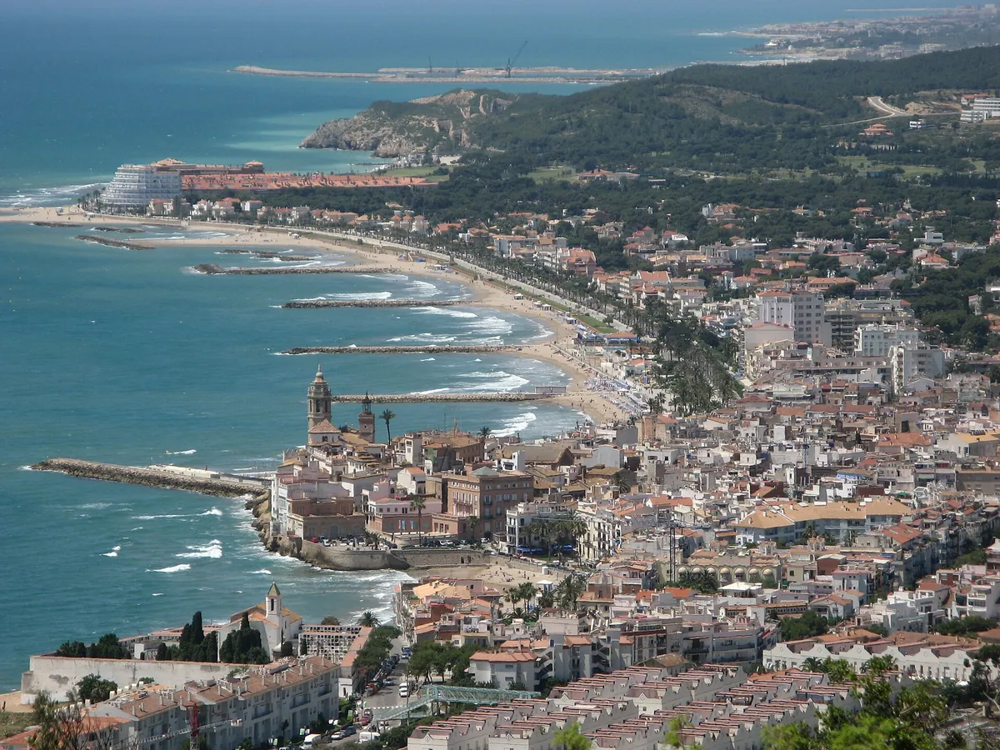
Sitges
저작자 Werner Lang (Wela49)
출처 Wikimedia Commons
라이선스 CC BY-SA 3.0
수정 리사이즈 및 WebP 변환, 메타데이터 제거
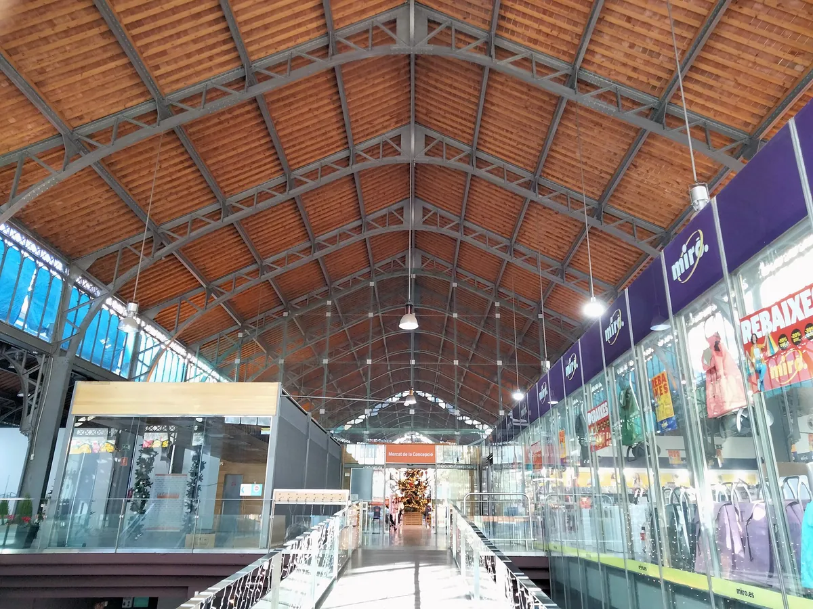
Mercat de la Concepció
저작자 Enric
출처 Wikimedia Commons
라이선스 CC BY-SA 4.0
수정 리사이즈 및 WebP 변환, 메타데이터 제거
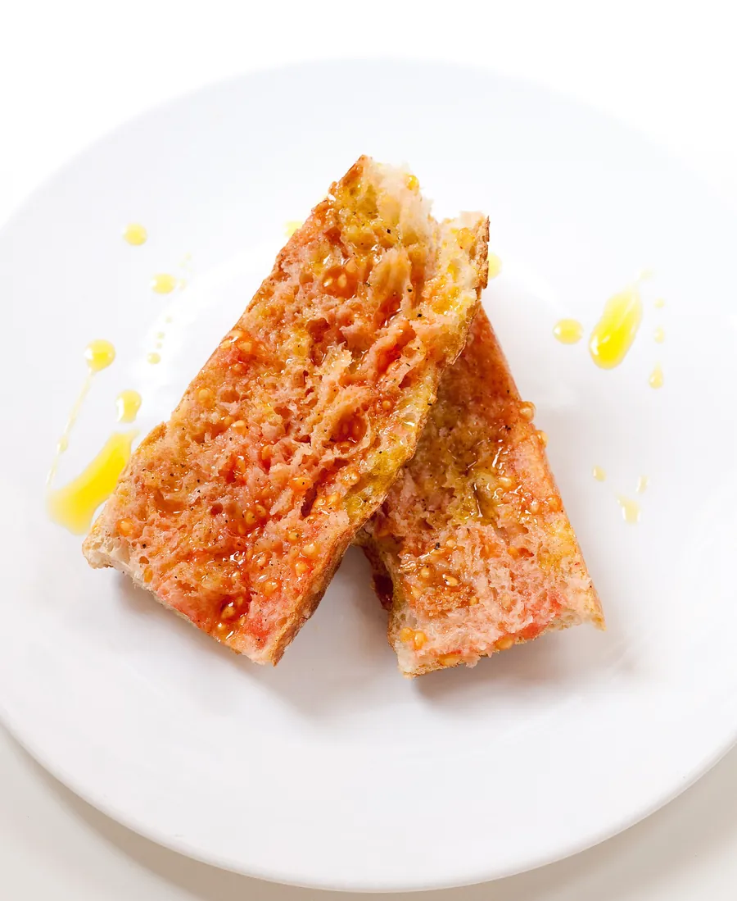
Pa amb tomàquet
저작자 jules / stonesoup
출처 Wikimedia Commons
라이선스 CC BY 2.0
수정 리사이즈 및 WebP 변환, 메타데이터 제거
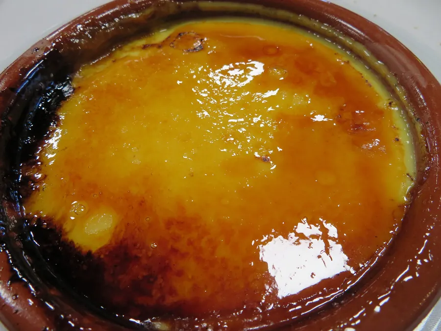
Crema catalana
저작자 Juan Emilio Prades Bel
출처 Wikimedia Commons
라이선스 CC BY 4.0
수정 리사이즈 및 WebP 변환, 메타데이터 제거
Girona
저작자 Guyw4444
출처 Wikimedia Commons
라이선스 CC BY-SA 4.0
수정 기존 검증 파생본을 리사이즈하고 WebP로 변환, 메타데이터 제거
Girona Cathedral
저작자 Fernando
출처 Wikimedia Commons
라이선스 CC BY-SA 4.0
수정 리사이즈 및 WebP 변환, 메타데이터 제거
Passeig de la Muralla
저작자 Yearofthedragon
출처 Wikimedia Commons
라이선스 CC BY-SA 3.0
수정 리사이즈 및 WebP 변환, 메타데이터 제거
Collioure
저작자 Doronenko
출처 Wikimedia Commons
라이선스 CC BY-SA 3.0
수정 WebP 변환 및 메타데이터 제거, 업스케일 없음
Peratallada
저작자 Carlos Pino Andújar
출처 Wikimedia Commons
라이선스 CC BY-SA 3.0
수정 리사이즈 및 WebP 변환, 메타데이터 제거
Calella de Palafrugell
저작자 Jorge Franganillo
출처 Wikimedia Commons
라이선스 CC BY 2.0
수정 리사이즈 및 WebP 변환, 메타데이터 제거
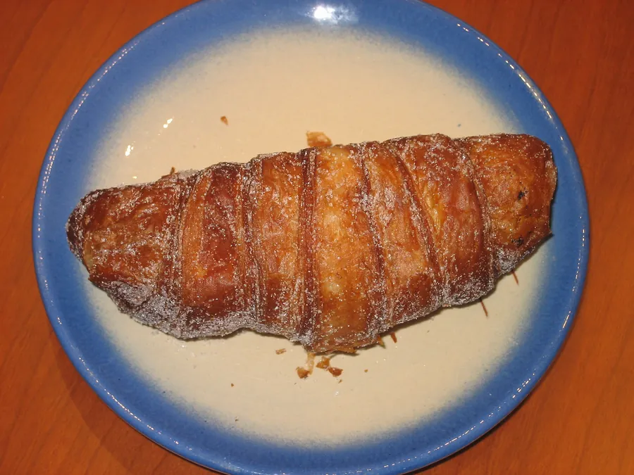
Xuixo
저작자 Cangur
출처 Wikimedia Commons
라이선스 Public Domain
수정 리사이즈 및 WebP 변환, 메타데이터 제거
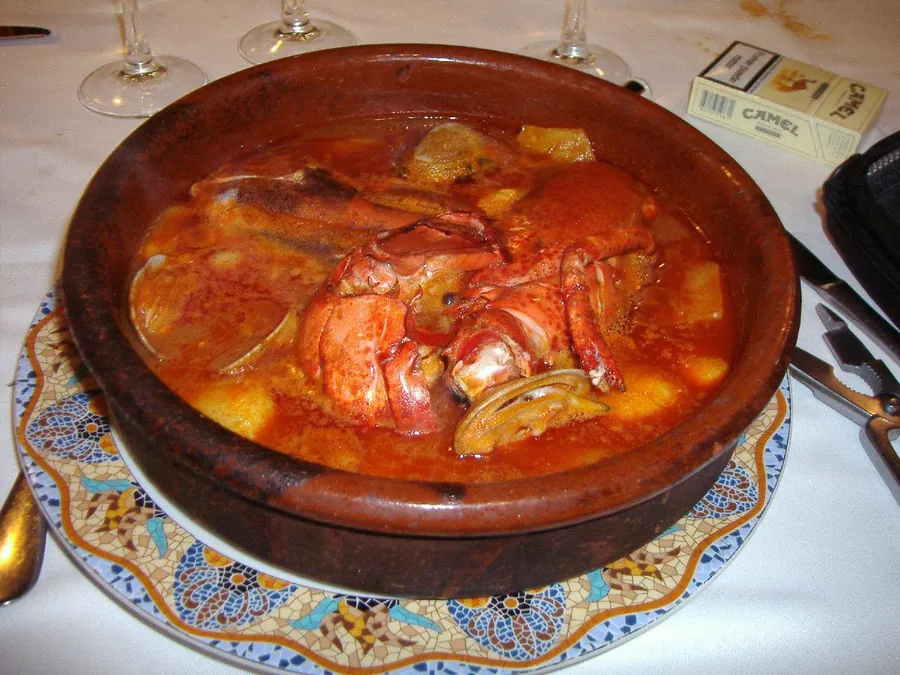
Suquet de peix
저작자 Hector Garcia
출처 Wikimedia Commons
라이선스 CC BY-SA 2.0
수정 리사이즈 및 WebP 변환, 메타데이터 제거
Nice
저작자 Floflo
출처 Wikimedia Commons
라이선스 CC BY-SA 2.5
수정 기존 검증 파생본을 리사이즈하고 WebP로 변환, 메타데이터 제거
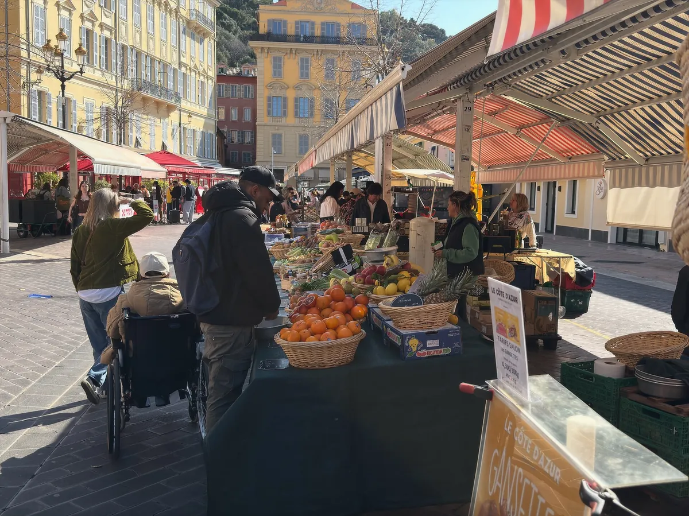
Cours Saleya
저작자 Mike is Michi
출처 Wikimedia Commons
라이선스 CC BY-SA 4.0
수정 리사이즈 및 WebP 변환, 메타데이터 제거
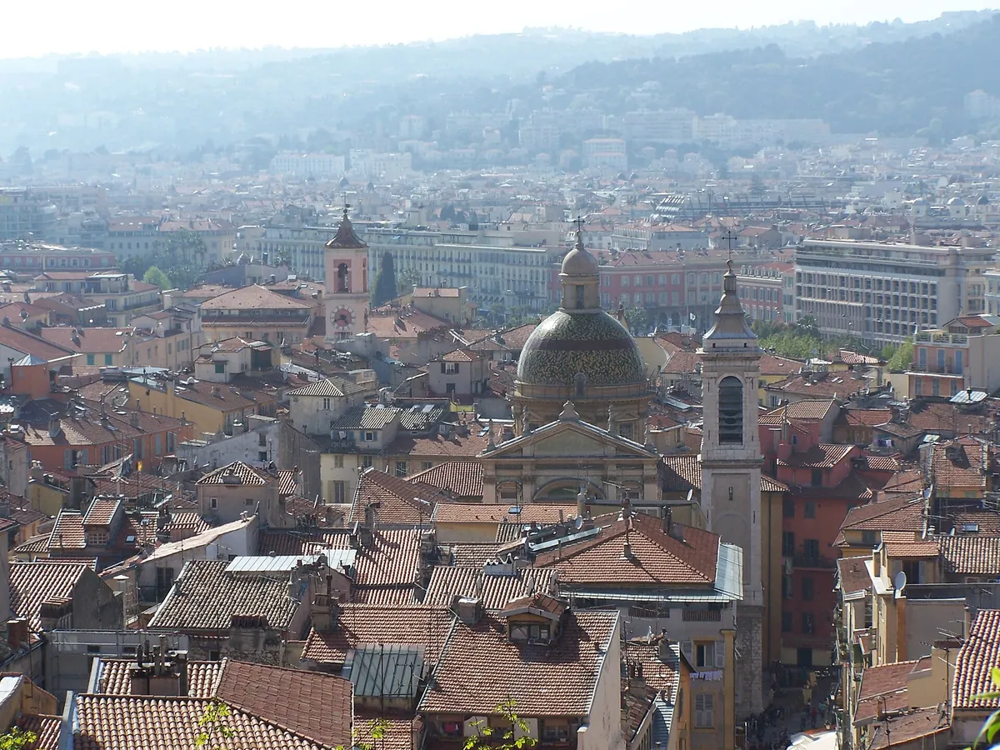
Vieux Nice
저작자 Baptiste Rossi
출처 Wikimedia Commons
라이선스 Public Domain
수정 리사이즈 및 WebP 변환, 메타데이터 제거
Colline du Château
저작자 Spike
출처 Wikimedia Commons
라이선스 CC BY-SA 4.0
수정 리사이즈 및 WebP 변환, 메타데이터 제거
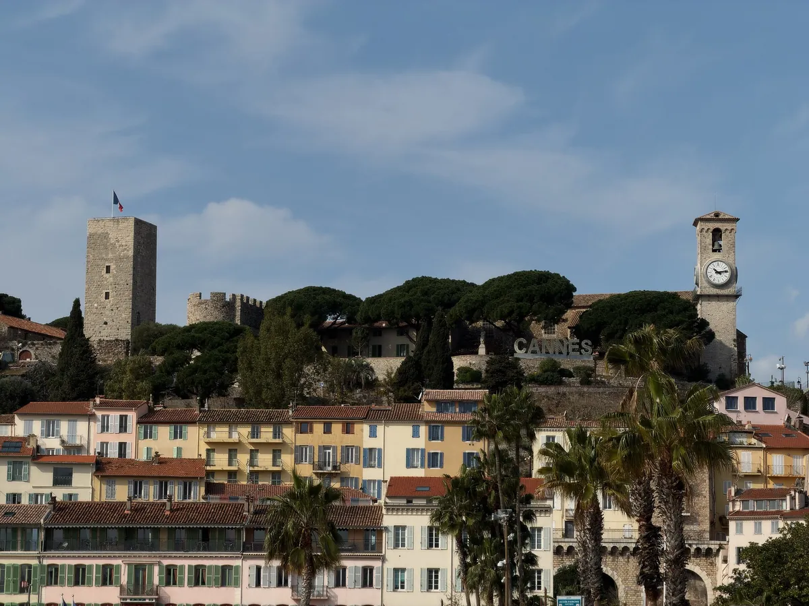
Le Suquet
저작자 Mike is Michi
출처 Wikimedia Commons
라이선스 CC BY-SA 4.0
수정 리사이즈 및 WebP 변환, 메타데이터 제거
Monaco
저작자 Joseph Plotz
출처 Wikimedia Commons
라이선스 CC BY 3.0
수정 리사이즈 및 WebP 변환, 메타데이터 제거
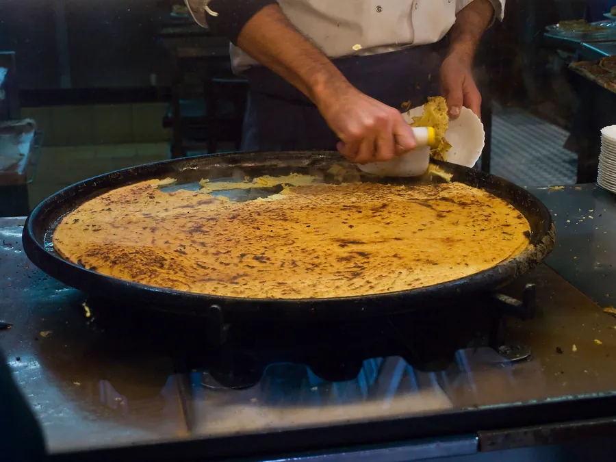
Socca
저작자 Myrabella
출처 Wikimedia Commons
라이선스 CC BY-SA 3.0
수정 리사이즈 및 WebP 변환, 메타데이터 제거
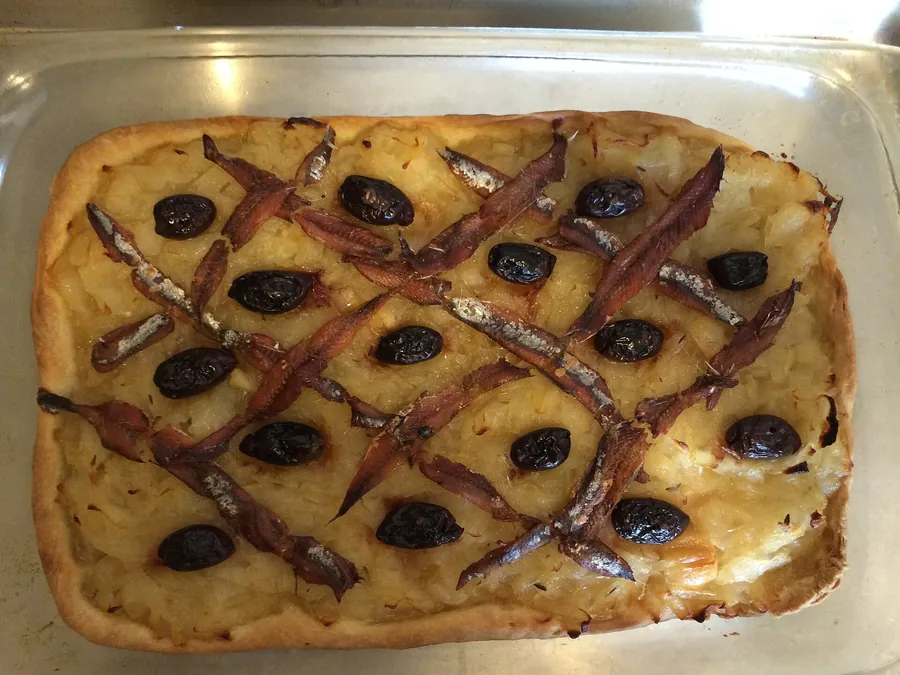
Pissaladière
저작자 Cdg83
출처 Wikimedia Commons
라이선스 CC BY-SA 4.0
수정 리사이즈 및 WebP 변환, 메타데이터 제거 사용 조건
CC BY · CC BY-SA 의 저작자 표시와 라이선스 링크를 유지한다.
CC BY-SA 사진을 수정한 파생본은 동일하거나 호환되는 조건으로 배포한다.
원본을 대체하지 않고 파생본임을 명시한다.
그 밖의 자료
본문 서체는 나눔고딕 (NHN Corporation · 디자인 Sandoll Communications) 이며
SIL Open Font License 1.1 로 배포된다.
CDN 을 쓰지 않고 assets/vendor/nanum/ 에 번들했다 — 오프라인에서도 뜬다.
라이선스 전문은 같은 폴더의 LICENSE.txt 다.
색은 스페인·프랑스 국기색에서 뽑았다. 국기 원색을 그대로 쓰면 야외에서
읽히지 않는 값이 있어(스페인 노랑은 흰 바탕에 1.7:1) 글자용은 명암비를 맞춰 낮췄다.
편집 도식과 데일리 카드는 이 여행을 위해 직접 제작했다.
실행지도의 배경 타일은 OpenStreetMap 기여자들의 것이며
ODbL 조건으로 제공된다. 지도 라이브러리는 Leaflet (BSD-2-Clause) 을 로컬 번들로 쓴다.
주요 방문지 카드는 외부 서버를 hotlink하지 않고 검증·최적화한 로컬 WebP를 쓴다.
원본 표 — source/ASSETS/88_Representative_Public_Photo_Credits_v1.0.md.
빌드가 이 표와 대조해 저작자·라이선스가 어긋나면 중단한다.